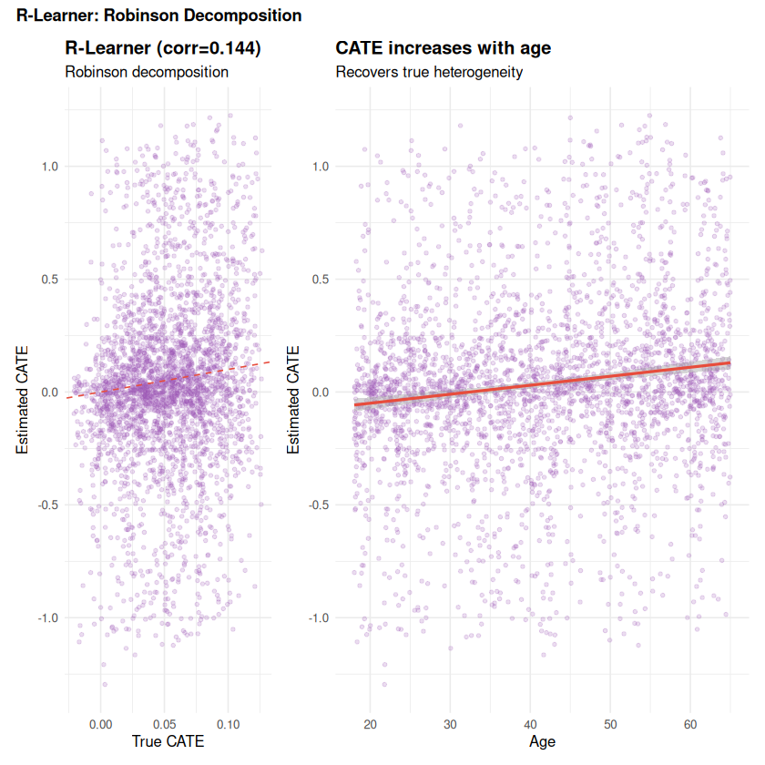
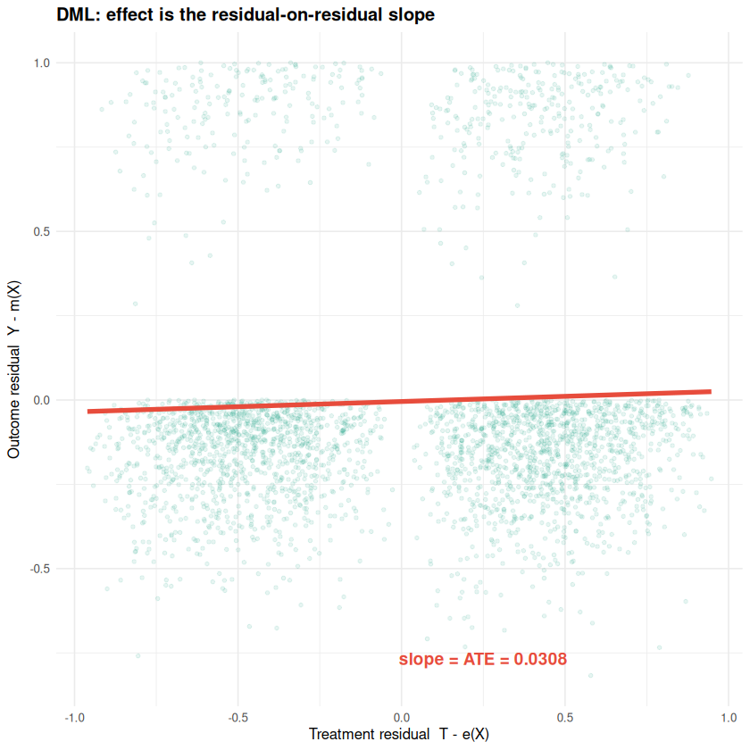
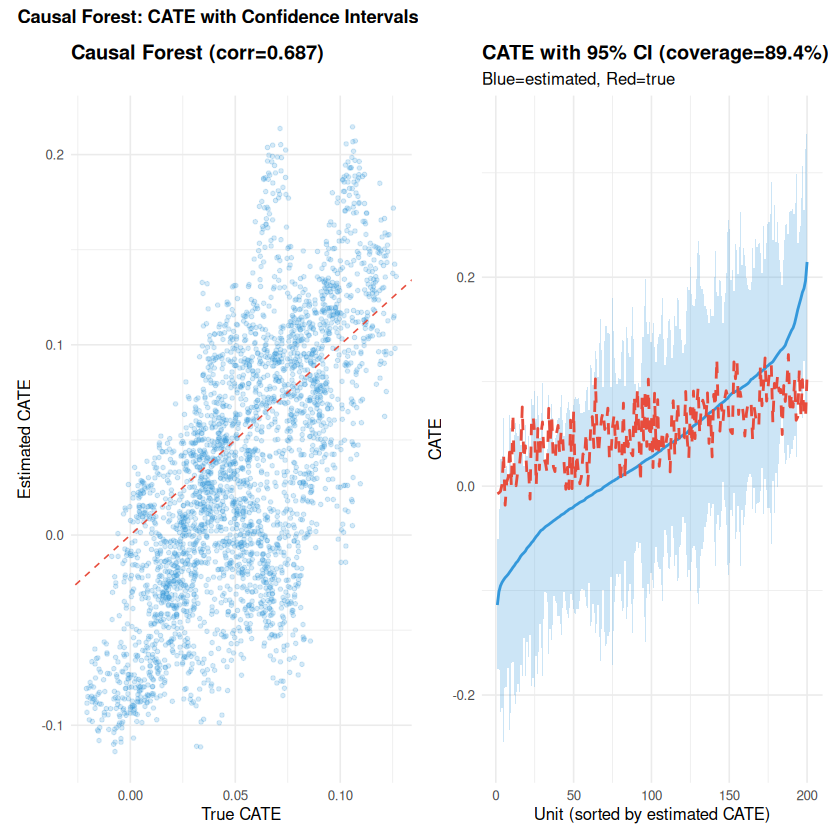
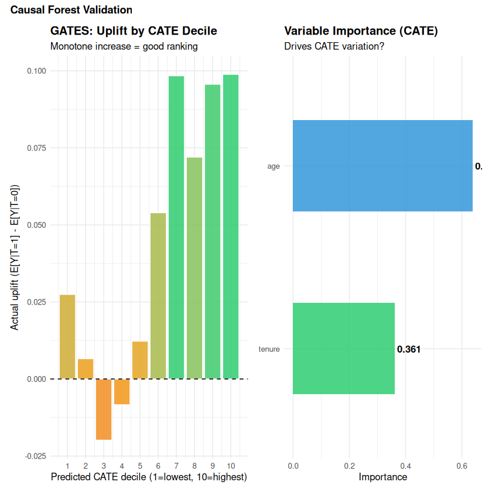
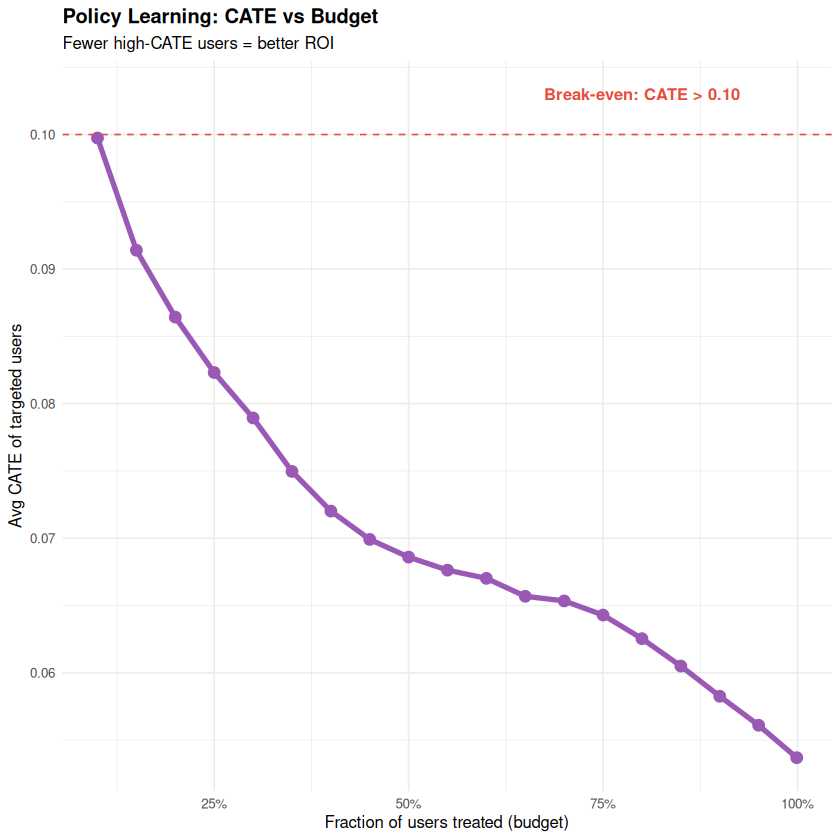

How do you estimate individual-level treatment effects?#
Topics: CATE - S/T/X/R-Learners - Double Machine Learning (DoubleML) - Causal Forests (grf) - Uplift Modeling - Qini - Policy Learning
Toy dataset: discount offer for an e-commerce platform. Users receive a discount email (treatment). Purchase probability (outcome) depends on age and tenure – the treatment effect is heterogeneous: older, high-tenure users respond more. The same dataset runs through all sections.
SS1 – CATE & Meta-Learners Overview#
What it is#
CATE: \(\tau(x) = E[Y(1) - Y(0) \mid X=x]\) – individual-level effect varying with features
Meta-learners use any off-the-shelf ML model to estimate CATE
Enables personalised policies: target the discount at users who respond to it
Assumptions (all meta-learners)#
Unconfoundedness: \((Y(0), Y(1)) \perp T \mid X\)
Overlap: \(0 < P(T=1 \mid X) < 1\) for all X
SUTVA: no interference
Validation#
Overlap plot – propensity score distributions should overlap between groups
AUUC (Area Under Uplift Curve) on held-out data
GATES (Sorted Group ATE) – actual effect by predicted CATE decile should increase
Learner comparison#
Learner |
Best when |
Key limitation |
|---|---|---|
S-Learner |
Simple, small n |
Shrinks CATE toward 0 if T not given weight |
T-Learner |
Balanced groups |
Needs enough data in each arm |
X-Learner |
Imbalanced arms |
Requires good base model per arm |
R-Learner |
Default – most robust |
Requires cross-fitting of nuisance models |
library(dplyr); library(ranger); library(ggplot2); library(patchwork)
set.seed(42)
X <- df |> select(age, tenure) |> as.matrix()
# S-Learner: single model with T as a feature
XT <- cbind(X, T = df$T)
s_model <- ranger::ranger(Y ~ ., data = as.data.frame(cbind(XT, Y = df$Y)),
num.trees = 300, seed = 42)
cate_s <- predict(s_model, data = as.data.frame(cbind(X, T=1)))$predictions -
predict(s_model, data = as.data.frame(cbind(X, T=0)))$predictions
# T-Learner: separate models per arm
m0 <- ranger::ranger(Y ~ ., data = as.data.frame(cbind(X, Y=df$Y))[df$T==0,],
num.trees = 300, seed = 42)
m1 <- ranger::ranger(Y ~ ., data = as.data.frame(cbind(X, Y=df$Y))[df$T==1,],
num.trees = 300, seed = 42)
cate_t <- predict(m1, data = as.data.frame(X))$predictions -
predict(m0, data = as.data.frame(X))$predictions
corr_s <- cor(df$true_cate, cate_s)
corr_t <- cor(df$true_cate, cate_t)
cat(sprintf("S-Learner corr with true CATE : %.3f\n", corr_s))
cat(sprintf("T-Learner corr with true CATE : %.3f\n", corr_t))
# Shared axis range for the scatter plots
lims <- range(c(df$true_cate, cate_s, cate_t))
# Histogram: CATE distribution
p_hist <- ggplot(tibble::tibble(true_cate = df$true_cate), aes(x = true_cate)) +
geom_histogram(bins = 40, fill = "#7F8C8D", color = "white", alpha = 0.85) +
geom_vline(xintercept = mean(df$true_cate), color = "#E74C3C",
linetype = "dashed", linewidth = 1) +
annotate("text", x = mean(df$true_cate) + 0.005, y = Inf,
label = sprintf("ATE=%.4f", mean(df$true_cate)),
vjust = 2, color = "#E74C3C", size = 3) +
labs(title = "True CATE Distribution", x = "CATE", y = "Count") +
theme_minimal(base_size = 10) + theme(plot.title = element_text(face = "bold"))
# S-Learner scatter (no coord_equal -- use shared xlim/ylim instead)
p_s <- ggplot(tibble::tibble(true = df$true_cate, est = cate_s),
aes(x = true, y = est)) +
geom_point(alpha = 0.15, size = 0.8, color = "#3498DB") +
geom_abline(slope = 1, intercept = 0, color = "#E74C3C", linetype = "dashed") +
xlim(lims) + ylim(lims) +
labs(title = sprintf("S-Learner (corr=%.3f)", corr_s),
x = "True CATE", y = "Estimated CATE") +
theme_minimal(base_size = 10) + theme(plot.title = element_text(face = "bold"))
# T-Learner scatter
p_t <- ggplot(tibble::tibble(true = df$true_cate, est = cate_t),
aes(x = true, y = est)) +
geom_point(alpha = 0.15, size = 0.8, color = "#2ECC71") +
geom_abline(slope = 1, intercept = 0, color = "#E74C3C", linetype = "dashed") +
xlim(lims) + ylim(lims) +
labs(title = sprintf("T-Learner (corr=%.3f)", corr_t),
x = "True CATE", y = "Estimated CATE") +
theme_minimal(base_size = 10) + theme(plot.title = element_text(face = "bold"))
# Layout: histogram on top spanning full width, two scatters below
(p_hist) / (p_s + p_t) +
plot_annotation(title = "S-Learner vs T-Learner",
theme = theme(plot.title = element_text(face = "bold", size = 11)))
{kind=link}
SS2 – R-Learner (Robinson Decomposition)#
What it is#
Residualises both outcome and treatment on covariates X
Estimates CATE by regressing outcome residuals on treatment residuals
Most statistically efficient meta-learner; the recommended default
Robinson decomposition#
Rearranging: \(\hat\tau(X) = \text{argmin}_\tau \sum_i (T_i-\hat e(X_i))^2 \left(\frac{Y_i-\hat m(X_i)}{T_i-\hat e(X_i)} - \tau(X_i)\right)^2\)
\(m(x) = E[Y \mid X]\) and \(e(x) = E[T \mid X]\) are nuisance functions estimated first
Nuisances are estimated with cross-fitting (k-fold, predict on held-out fold) to avoid overfitting bias contaminating the CATE estimate
Reference#
Nie & Wager (2021) on the R-learner; Chernozhukov et al. (2018) on DML
library(dplyr); library(ranger); library(ggplot2)
set.seed(42)
X_df <- df |> select(age, tenure)
k <- 5
folds <- sample(rep(1:k, length.out = nrow(df)))
m_hat <- numeric(nrow(df)) # E[Y|X]
e_hat <- numeric(nrow(df)) # E[T|X]
for (fold in 1:k) {
tr <- folds != fold; va <- folds == fold
# Nuisance: outcome model
rf_y <- ranger::ranger(Y ~ ., data = cbind(X_df[tr,], Y=df$Y[tr]),
num.trees = 200, seed = 42)
m_hat[va] <- predict(rf_y, data = X_df[va,])$predictions
# Nuisance: propensity model (T is binary -> use classification)
rf_t <- ranger::ranger(T ~ ., data = cbind(X_df[tr,], T=factor(df$T[tr])),
num.trees = 200, probability = TRUE, seed = 42)
e_hat[va] <- predict(rf_t, data = X_df[va,])$predictions[,"1"]
}
# R-learner CATE: pseudo-outcome / treatment residual, weighted regression
Y_res <- df$Y - m_hat
T_res <- df$T - e_hat
pseudo_outcome <- Y_res / (T_res + 1e-6) # avoid divide-by-zero
weights <- T_res^2
cate_model <- ranger::ranger(pseudo ~ .,
data = cbind(X_df, pseudo = pseudo_outcome),
num.trees = 300, seed = 42,
case.weights = weights)
cate_r <- predict(cate_model, data = X_df)$predictions
corr_r <- cor(df$true_cate, cate_r)
cat(sprintf("R-Learner corr with true CATE : %.3f\n", corr_r))
p1 <- ggplot(tibble::tibble(true=df$true_cate, est=cate_r),
aes(x=true, y=est)) +
geom_point(alpha=0.2, size=1, color="#9B59B6") +
geom_abline(slope=1, intercept=0, color="#E74C3C", linetype="dashed") +
xlim(range(df$true_cate)) + ylim(range(cate_r)) +
labs(title=sprintf("R-Learner (corr=%.3f)", corr_r),
subtitle="Robinson decomposition",
x="True CATE", y="Estimated CATE") +
theme_minimal(base_size=10) + theme(plot.title=element_text(face="bold"))
p2 <- ggplot(df |> mutate(r_cate=cate_r), aes(x=age, y=r_cate)) +
geom_point(alpha=0.2, size=1, color="#9B59B6") +
geom_smooth(method="lm", se=TRUE, color="#E74C3C", formula=y~x) +
labs(title="CATE increases with age",
subtitle="Recovers true heterogeneity",
x="Age", y="Estimated CATE") +
theme_minimal(base_size=10) + theme(plot.title=element_text(face="bold"))
p1 + p2 + plot_layout(widths = c(1, 2)) +
plot_annotation(title="R-Learner: Robinson Decomposition",
theme=theme(plot.title=element_text(face="bold", size=11)))
R-Learner corr with true CATE : 0.144
{kind=link}

SS3 – Double Machine Learning (DoubleML)#
What it is#
Framework for ATE/CATE using flexible ML for the nuisance functions
Two nuisances: \(m(x) = E[Y \mid X]\) and \(e(x) = E[T \mid X]\)
Effect estimated from residuals: same Robinson decomposition as R-learner
DML = R-learner specialised to a constant treatment effect (ATE)
Two key ideas#
Neyman orthogonality: the residual-on-residual score is insensitive to small errors in nuisance estimates – slow ML rates do not contaminate the effect estimate
Cross-fitting: nuisances fit on out-of-fold data, predict on held-out fold – removes overfitting bias from the effect estimate
R: DoubleML package#
DoubleML::DoubleMLPLR (Partially Linear Regression) is the direct R implementation
of the Chernozhukov et al. (2018) DML estimator.
Reference#
Chernozhukov et al. (2018), Double/Debiased Machine Learning for Treatment and Structural Parameters
library(DoubleML)
library(mlr3)
library(mlr3learners)
library(ranger)
library(ggplot2)
set.seed(42)
X_mat <- df |> select(age, tenure) |> as.matrix()
# DoubleML requires the mlr3 ecosystem for learner specification
# mlr3learners provides lrn() and the ranger integration
dml_data <- DoubleMLData$new(
data = cbind(as.data.frame(X_mat), Y = df$Y, T = df$T),
y_col = "Y",
d_cols = "T",
x_cols = c("age", "tenure")
)
# Specify learners using mlr3 lrn()
lrn_y <- lrn("regr.ranger", num.trees = 200)
lrn_t <- lrn("classif.ranger", num.trees = 200)
# Partially Linear Regression (PLR) -- the standard DML ATE estimator
dml_plr <- DoubleMLPLR$new(
dml_data,
ml_l = lrn_y,
ml_m = lrn_t,
n_folds = 5,
score = "partialling out"
)
dml_plr$fit()
dml_ate <- dml_plr$coef["T"]
dml_ci <- dml_plr$confint()
naive_ate <- mean(df$Y[df$T==1]) - mean(df$Y[df$T==0])
cat(sprintf("True ATE : %.4f\n", mean(df$true_cate)))
cat(sprintf("Naive diff-in-means : %.4f (biased)\n", naive_ate))
cat(sprintf("DoubleML PLR ATE : %.4f\n", dml_ate))
cat(sprintf("95%% CI : [%.4f, %.4f]\n", dml_ci[1,1], dml_ci[1,2]))
# Residual-on-residual plot (uses nuisance estimates from the R-learner cell)
Y_res <- df$Y - m_hat
T_res <- df$T - e_hat
ate_resid <- sum(T_res * Y_res) / sum(T_res^2)
ggplot(tibble::tibble(Tr=T_res, Yr=Y_res), aes(x=Tr, y=Yr)) +
geom_point(alpha=0.1, size=1, color="#16A085") +
geom_smooth(method="lm", formula=y~x, se=FALSE,
color="#E74C3C", linewidth=1.5) +
annotate("text", x=0.25, y=min(Y_res)+0.05,
label=sprintf("slope = ATE = %.4f", ate_resid),
color="#E74C3C", fontface="bold", size=4) +
labs(title="DML: effect is the residual-on-residual slope",
x="Treatment residual T - e(X)",
y="Outcome residual Y - m(X)") +
theme_minimal(base_size=10) +
theme(plot.title=element_text(face="bold"))
INFO [21:21:15.899] [mlr3] Applying learner 'regr.ranger' on task 'nuis_l' (iter 1/5)
INFO [21:21:16.198] [mlr3] Applying learner 'regr.ranger' on task 'nuis_l' (iter 2/5)
INFO [21:21:16.468] [mlr3] Applying learner 'regr.ranger' on task 'nuis_l' (iter 3/5)
INFO [21:21:16.742] [mlr3] Applying learner 'regr.ranger' on task 'nuis_l' (iter 4/5)
INFO [21:21:17.013] [mlr3] Applying learner 'regr.ranger' on task 'nuis_l' (iter 5/5)
INFO [21:21:17.886] [mlr3] Applying learner 'classif.ranger' on task 'nuis_m' (iter 1/5)
INFO [21:21:18.238] [mlr3] Applying learner 'classif.ranger' on task 'nuis_m' (iter 2/5)
INFO [21:21:18.588] [mlr3] Applying learner 'classif.ranger' on task 'nuis_m' (iter 3/5)
INFO [21:21:18.937] [mlr3] Applying learner 'classif.ranger' on task 'nuis_m' (iter 4/5)
INFO [21:21:19.296] [mlr3] Applying learner 'classif.ranger' on task 'nuis_m' (iter 5/5)
True ATE : 0.0532
Naive diff-in-means : 0.0461 (biased)
DoubleML PLR ATE : 0.0330
95% CI : [0.0057, 0.0603]
{kind=link}

SS4 – Causal Forests (grf)#
What it is#
Extends Random Forest to estimate CATE instead of outcomes
Uses honest splitting: different samples to split and to estimate leaf effects
Provides asymptotically valid confidence intervals for individual effects
grf::causal_forest()is the original implementation (Athey & Wager’s R package)
Key differences from standard Random Forest#
Random Forest |
Causal Forest |
|
|---|---|---|
Target |
Outcome Y |
Treatment effect Y(1)-Y(0) |
Splitting criterion |
Variance of Y |
Heterogeneity of treatment effect |
Honest splitting |
No |
Yes – split/estimate on different samples |
Confidence intervals |
Bootstrap only |
Asymptotically valid (infinitesimal jackknife) |
CATE validation without ground truth (BLP / GATES)#
BLP (Best Linear Predictor): regress outcome on estimated CATE – a positive slope confirms real heterogeneity is captured
GATES (Sorted Group ATE): bucket units by predicted CATE decile, estimate actual ATE per bucket; buckets should be monotonically increasing
Reference#
Wager & Athey (2018); Athey, Tibshirani & Wager (2019) on Generalized Random Forests
library(grf)
library(ggplot2)
library(patchwork)
set.seed(42)
X_mat <- df |> select(age, tenure) |> as.matrix()
# Fit causal forest
cf <- grf::causal_forest(
X = X_mat,
Y = df$Y,
W = df$T,
num.trees = 1000,
seed = 42
)
# Point predictions and confidence intervals
cate_cf <- predict(cf, estimate.variance = TRUE)
tau_hat <- cate_cf$predictions
tau_se <- sqrt(cate_cf$variance.estimates)
ci_lower <- tau_hat - 1.96 * tau_se
ci_upper <- tau_hat + 1.96 * tau_se
coverage <- mean((df$true_cate >= ci_lower) & (df$true_cate <= ci_upper))
corr_cf <- cor(df$true_cate, tau_hat)
cat(sprintf("Causal Forest corr with true CATE : %.3f\n", corr_cf))
cat(sprintf("95%% CI empirical coverage : %.1f%% (target ~95%%)\n", coverage*100))
# Variable importance
vi <- grf::variable_importance(cf)
vi_df <- tibble::tibble(feature = c("age","tenure"), importance = as.numeric(vi))
cat("\nVariable importance for treatment effect heterogeneity:\n")
print(vi_df |> mutate(importance = round(importance, 4)) |> arrange(desc(importance)))
p1 <- ggplot(tibble::tibble(true=df$true_cate, est=tau_hat),
aes(x=true, y=est)) +
geom_point(alpha=0.2, size=1, color="#3498DB") +
geom_abline(slope=1, intercept=0, color="#E74C3C", linetype="dashed") +
xlim(range(df$true_cate)) + ylim(range(tau_hat)) +
labs(title=sprintf("Causal Forest (corr=%.3f)", corr_cf),
x="True CATE", y="Estimated CATE") +
theme_minimal(base_size=10) + theme(plot.title=element_text(face="bold"))
# CI coverage plot (sample of 200 units sorted by estimate)
ord <- order(tau_hat)[seq(1, nrow(df), length.out=200)]
ci_df <- tibble::tibble(
idx = 1:200, est = tau_hat[ord], lo = ci_lower[ord],
hi = ci_upper[ord], true = df$true_cate[ord]
)
p2 <- ggplot(ci_df, aes(x=idx)) +
geom_ribbon(aes(ymin=lo, ymax=hi), alpha=0.25, fill="#3498DB") +
geom_line(aes(y=est), color="#3498DB", linewidth=0.8) +
geom_line(aes(y=true), color="#E74C3C", linetype="dashed", linewidth=0.8) +
labs(title=sprintf("CATE with 95%% CI (coverage=%.1f%%)", coverage*100),
subtitle="Blue=estimated, Red=true",
x="Unit (sorted by estimated CATE)", y="CATE") +
theme_minimal(base_size=10) + theme(plot.title=element_text(face="bold"))
p1 + p2 +
plot_annotation(title="Causal Forest: CATE with Confidence Intervals",
theme=theme(plot.title=element_text(face="bold", size=11)))
Causal Forest corr with true CATE : 0.687
95% CI empirical coverage : 89.4% (target ~95%)
Variable importance for treatment effect heterogeneity:
# A tibble: 2 × 2
feature importance
<chr> <dbl>
1 age 0.639
2 tenure 0.361
{kind=link}

library(grf); library(ggplot2); library(patchwork)
# BLP and GATES validation -- no ground truth needed
# BLP: regress on the estimated CATE to check for real heterogeneity
blp <- best_linear_projection(cf, A = X_mat)
cat("Best Linear Projection (BLP):\n")
print(blp)
cat("\nA positive, significant coefficient on 'age' or 'tenure' confirms\n")
cat("that causal forest captured real heterogeneity driven by those features.\n\n")
# GATES: actual uplift by predicted CATE decile
tau_decile <- ntile(tau_hat, 10)
gates <- sapply(1:10, function(d) {
mask <- tau_decile == d
if (sum(df$T[mask]==1) > 0 && sum(df$T[mask]==0) > 0)
mean(df$Y[mask & df$T==1]) - mean(df$Y[mask & df$T==0])
else NA
})
gates_df <- tibble::tibble(decile=1:10, actual_uplift=gates)
p_gates <- ggplot(gates_df, aes(x=decile, y=actual_uplift, fill=actual_uplift)) +
geom_col(alpha=0.85, color="white") +
geom_hline(yintercept=0, linetype="dashed") +
scale_fill_gradient2(low="#E74C3C", mid="#F39C12", high="#2ECC71",
midpoint=0, guide="none") +
scale_x_continuous(breaks=1:10) +
labs(title="GATES: Uplift by CATE Decile",
subtitle="Monotone increase = good ranking",
x="Predicted CATE decile (1=lowest, 10=highest)",
y="Actual uplift (E[Y|T=1] - E[Y|T=0])") +
theme_minimal(base_size=10) + theme(plot.title=element_text(face="bold"))
p_vi <- ggplot(vi_df, aes(x=reorder(feature, importance), y=importance, fill=feature)) +
geom_col(alpha=0.85, width=0.5) +
geom_text(aes(label=round(importance,3)), hjust=-0.1, fontface="bold") +
coord_flip() +
scale_fill_manual(values=c("#3498DB","#2ECC71"), guide="none") +
labs(title="Variable Importance (CATE)",
subtitle="Drives CATE variation?",
x=NULL, y="Importance") +
theme_minimal(base_size=10) + theme(plot.title=element_text(face="bold"))
p_gates + p_vi +
plot_annotation(title="Causal Forest Validation",
theme=theme(plot.title=element_text(face="bold", size=11)))
Best Linear Projection (BLP):
Best linear projection of the conditional average treatment effect.
Confidence intervals are cluster- and heteroskedasticity-robust (HC3):
Estimate Std. Error t value Pr(>|t|)
(Intercept) -0.14784652 0.04791872 -3.0854 0.0020516 **
age 0.00376392 0.00097500 3.8604 0.0001156 ***
tenure 0.00086775 0.00078967 1.0989 0.2719075
---
Signif. codes: 0 ‘***’ 0.001 ‘**’ 0.01 ‘*’ 0.05 ‘.’ 0.1 ‘ ’ 1
A positive, significant coefficient on 'age' or 'tenure' confirms
that causal forest captured real heterogeneity driven by those features.
{kind=link}

SS5 – Uplift Modeling & Qini#
What it is#
Uplift modeling = CATE estimation for binary outcomes, industry vocabulary
Rank users by predicted CATE (uplift score), target the top users for treatment
Key insight: target persuadables (positive CATE), avoid do-not-disturb (negative CATE)
The four segments#
Segment |
Without treatment |
With treatment |
CATE |
Action |
|---|---|---|---|---|
Persuadables |
Won’t convert |
Will convert |
> 0 |
TARGET |
Sure Things |
Will convert |
Will convert |
~0 |
SKIP |
Lost Causes |
Won’t convert |
Won’t convert |
~0 |
SKIP |
Do Not Disturb |
Will convert |
Won’t convert |
< 0 |
AVOID |
Qini coefficient#
Rank users by predicted uplift, plot cumulative actual uplift vs fraction targeted
Qini = area between the model curve and the random diagonal
Qini = 0: random model. Qini = 1: perfect model. Qini < 0: worse than random
Formula#
library(dplyr); library(ggplot2); library(patchwork)
set.seed(42)
# Use causal forest predictions as uplift scores
# Train/test split
n_test <- 1000
test_idx <- sample(nrow(df), n_test)
train_idx <- setdiff(1:nrow(df), test_idx)
X_mat <- df |> select(age, tenure) |> as.matrix()
cf_train <- grf::causal_forest(
X = X_mat[train_idx,], Y = df$Y[train_idx], W = df$T[train_idx],
num.trees = 500, seed = 42
)
uplift_score <- predict(cf_train, newdata = X_mat[test_idx,])$predictions
T_te <- df$T[test_idx]; Y_te <- df$Y[test_idx]
true_cate_te <- df$true_cate[test_idx]
# Four segments by true CATE
base_p <- pmax(pmin(0.10 + 0.001*df$tenure[test_idx] - 0.0005*(df$age[test_idx]-40), 1), 0)
trt_p <- pmin(base_p + true_cate_te, 1)
threshold <- median(base_p)
seg <- dplyr::case_when(
base_p < threshold & trt_p >= threshold ~ "Persuadable",
base_p >= threshold & trt_p >= threshold ~ "Sure Thing",
base_p < threshold & trt_p < threshold ~ "Lost Cause",
.default = "Do Not Disturb"
)
seg_df <- tibble::tibble(segment=seg) |> count(segment) |>
mutate(pct = n / sum(n), segment = factor(segment, levels=c("Persuadable","Sure Thing","Lost Cause","Do Not Disturb")))
p1 <- ggplot(seg_df, aes(x=segment, y=pct, fill=segment)) +
geom_col(alpha=0.85) +
geom_text(aes(label=scales::percent(pct,1)), vjust=-0.4, fontface="bold") +
scale_fill_manual(values=c("#2ECC71","#F39C12","#AEB6BF","#E74C3C"), guide="none") +
scale_y_continuous(labels=scales::percent) +
labs(title="Four Uplift Segments", x=NULL, y="% of users") +
theme_minimal(base_size=10) + theme(plot.title=element_text(face="bold"))
# Qini curve
qini_curve <- function(uplift, T, Y) {
ord <- order(uplift, decreasing=TRUE)
T_s <- T[ord]; Y_s <- Y[ord]; n <- length(T)
nt <- sum(T); nc <- sum(1-T)
cum_ty <- cumsum(Y_s * T_s); cum_cy <- cumsum(Y_s * (1-T_s))
fracs <- (1:n) / n
qini <- cum_ty/nt - cum_cy/nc
list(fracs=c(0, fracs), qini=c(0, qini * fracs))
}
qc <- qini_curve(uplift_score, T_te, Y_te)
qc_rand <- qini_curve(runif(n_test), T_te, Y_te)
qini_coef <- pracma::trapz(qc$fracs, qc$qini)
p2 <- ggplot() +
geom_line(data=tibble::tibble(x=qc$fracs, y=qc$qini),
aes(x=x, y=y), color="#3498DB", linewidth=1.5) +
geom_line(data=tibble::tibble(x=qc_rand$fracs, y=qc_rand$qini),
aes(x=x, y=y), color="#AEB6BF", linetype="dashed") +
scale_x_continuous(labels=scales::percent) +
labs(title=sprintf("Qini Curve (Qini coef = %.4f)", qini_coef),
subtitle="Above diagonal = better than random",
x="Fraction of population targeted", y="Cumulative uplift") +
theme_minimal(base_size=10) + theme(plot.title=element_text(face="bold"))
p1 + p2 +
plot_annotation(title="Uplift Modeling: Segments and Qini Curve",
theme=theme(plot.title=element_text(face="bold", size=11)))
{kind=link}
SS6 – Policy Learning#
What it is#
Uplift score tells you who responds – policy learning turns that into a decision rule
Decision rule: treat unit x iff \(\tau(x) > c/v\) where \(c\) = treatment cost, \(v\) = conversion value
Under a budget B, treat the top-scoring units until B is exhausted
Policy value estimation#
Estimate the value of a targeting policy on a holdout set using IPW or AIPW
Never estimate policy value on training data – overfits to noise in CATE estimates
Reference#
Athey & Wager (2021) on policy learning
library(dplyr); library(ggplot2)
# Policy: treat users where estimated CATE > cost/value threshold
cost_per_treatment <- 5 # e.g. $5 discount
value_per_convert <- 50 # e.g. $50 purchase value
threshold <- cost_per_treatment / value_per_convert # 0.10 pp CATE
# Assign policy: treat if uplift_score > threshold
policy <- as.integer(uplift_score > threshold)
# Estimate policy value on holdout using IPW
ps_te <- predict(glm(T ~ age + tenure, data=df[train_idx,], family=binomial),
newdata=df[test_idx,], type="response")
ipw_val <- mean(policy * (df$Y[test_idx] * df$T[test_idx] / ps_te -
df$Y[test_idx] * (1-df$T[test_idx]) / (1-ps_te)))
# Comparison: random policy (treat 50%), always treat, optimal policy
frac_treated <- mean(policy)
cat(sprintf("Policy threshold : CATE > %.3f (cost/value = %d/%d)\n",
threshold, cost_per_treatment, value_per_convert))
cat(sprintf("Fraction treated : %.1f%%\n", frac_treated * 100))
cat(sprintf("Avg true CATE for treated : %.4f\n",
mean(df$true_cate[test_idx][policy==1])))
cat(sprintf("Avg true CATE for untreated : %.4f\n",
mean(df$true_cate[test_idx][policy==0])))
# Budget vs value curve: plot policy value at each CATE threshold
thresholds <- quantile(uplift_score, seq(0, 0.9, 0.05))
policy_df <- purrr::map_dfr(thresholds, function(thresh) {
pol <- as.integer(uplift_score > thresh)
avg_cate <- if(sum(pol)>0) mean(df$true_cate[test_idx][pol==1]) else NA
tibble::tibble(threshold=thresh, frac_treated=mean(pol), avg_cate_treated=avg_cate)
})
ggplot(policy_df, aes(x=frac_treated, y=avg_cate_treated)) +
geom_line(color="#9B59B6", linewidth=1.5) +
geom_point(size=3, color="#9B59B6") +
geom_hline(yintercept=threshold, linetype="dashed", color="#E74C3C") +
annotate("text", x=0.8, y=threshold+0.003,
label=sprintf("Break-even: CATE > %.2f", threshold),
color="#E74C3C", fontface="bold", size=3.5) +
scale_x_continuous(labels=scales::percent) +
labs(title="Policy Learning: CATE vs Budget",
subtitle="Fewer high-CATE users = better ROI",
x="Fraction of users treated (budget)", y="Avg CATE of targeted users") +
theme_minimal(base_size=10) + theme(plot.title=element_text(face="bold"))
Policy threshold : CATE > 0.100 (cost/value = 5/50)
Fraction treated : 14.8%
Avg true CATE for treated : 0.0915
Avg true CATE for untreated : 0.0470
{kind=link}

Method Comparison#
Method |
Estimates |
R package |
Key strength |
|---|---|---|---|
S-Learner |
CATE |
|
Simple, one model |
T-Learner |
CATE |
|
Flexible per-arm models |
R-Learner |
CATE |
|
Statistically efficient |
DoubleML PLR |
ATE |
|
Robust ATE with valid CI |
Causal Forest |
CATE + CI |
|
Valid CIs, variable importance, BLP/GATES |
Uplift + Qini |
Targeting |
|
Production targeting and evaluation |
Interview Q&A#
S-Learner vs T-Learner? T-Learner is better when treatment effect is heterogeneous and groups are balanced. S-Learner is better when n is small or the effect is weak (pooling increases n). T-Learner fails with very imbalanced treatment groups – use X-Learner then.
What is honest splitting and why does it matter? Standard trees use the same data to choose splits AND estimate leaf values – this overfits. Honest splitting uses one half to find splits, another to estimate leaf effects. Without honesty, confidence intervals are too narrow and coverage fails.
How do you evaluate CATE without ground truth? BLP: regress outcomes on estimated CATE – a positive slope confirms real heterogeneity. GATES: sort by predicted CATE, estimate actual uplift per decile – should increase monotonically. Both are honest: they use a holdout set and do not require knowing true tau(x).
How do you set a treatment threshold for policy learning? Treat iff CATE > cost/value. Under a budget B, treat the top-k users by CATE. Estimate the policy value on a holdout using IPW/AIPW – never on training data.
Gotchas#
CATE estimates can be negative – do-not-disturb users should be excluded from targeting
Qini on training data is always optimistic – always evaluate on holdout
Causal forest needs enough treated AND control in each leaf – check overlap first
DoubleML requires cross-fitting – never fit nuisance models on the full dataset